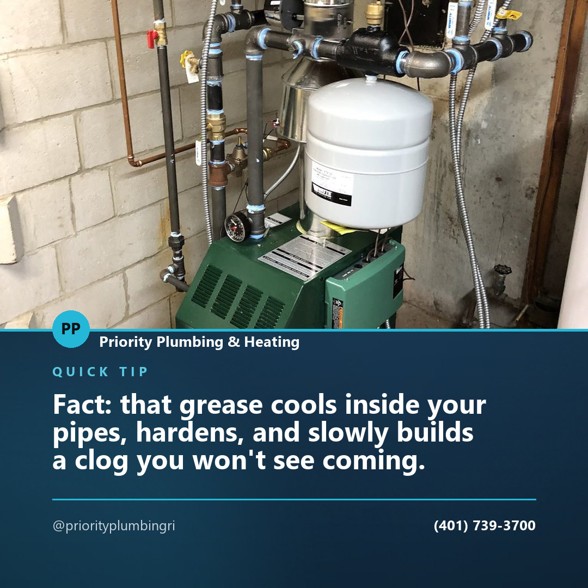
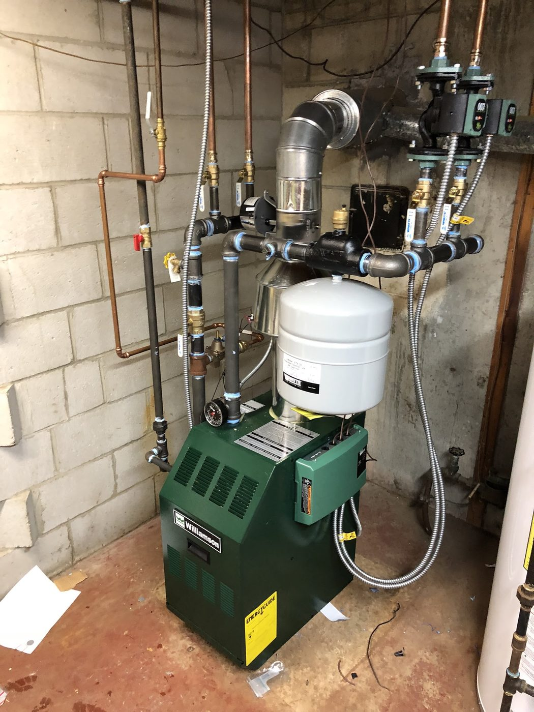
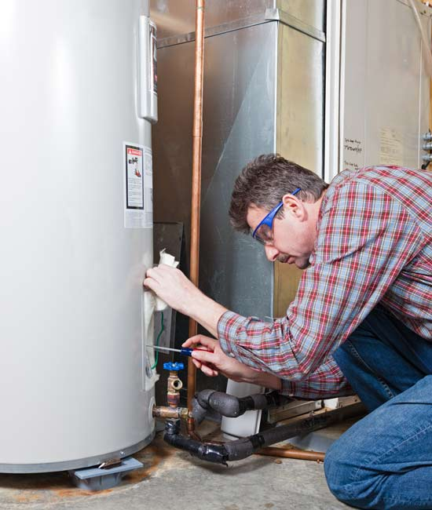
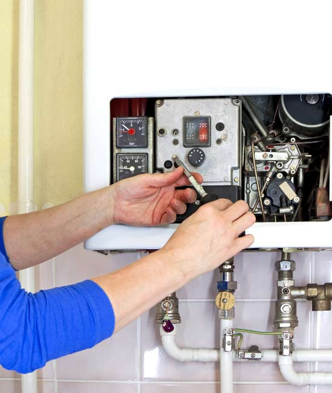

Post idea · Facebook
Myth: hot water washes cooking grease safely down the drain. Fact: that grease cools inside your pipes, hardens, and slowly builds a clog you won't see coming.
Plumbing, heating and air conditioning in Warwick — fast, conscientious, efficient service, and all of the work is guaranteed.
Free quote(401) 739-3700They note that phone calls are preferred and typically get the fastest response.
“Founded in 2003, Priority Plumbing & Heating is dedicated to providing fast, conscientious and efficient service.”Priority Plumbing & Heating
Owner and Master Plumber Michael Cambio has over a decade of plumbing experience. Professional technicians, prompt service and honest work are what they say you can expect — a team equipped to maintain, repair and replace home heating, AC and plumbing, from urgent matters through to seasonal maintenance.
The core of the business, for homes across Warwick.
Basic plumbing repairs and the seasonal work that prevents the emergencies.
New gas boilers installed, plus repairs to what's already there.
They describe themselves as high-efficiency boiler conversion experts.
Converting an oil system over to gas, start to finish.
Replace, repair, install — including high-efficiency tankless.
New builds and remodeling, on the plumbing side of the job.
AC services, installation and maintenance.
Water treatment and purification services.
Stated on their own site as the thing they specialize in — installation, repairs and maintenance across every type.
“After being referred to Priority by a friend, I have had priority to 2 jobs for me at my house. Both times it was a spotless process. Both the owner and his crew were all professional, knowledgeable, and did the jobs within the proposed time frames. They did a great job cleaning up after the job was complete both times. The owner, Mike, was also happy to look at my old shower and suggest some easy fixes on leaky fixtures for me. Thanks Mike! Highly recommended.” Michael T.



240 Pawtuxet Ave
Warwick, RI 02888
Content